希望修改两足动物角色的循环行走动画，以便在其循环行走期间，角色转一个弯，然后沿坡道向下行走。
使两足动物角色在其循环行走期间转一个弯
- 在角色的动画中前进，直到找到希望角色转弯的位置处的点，然后在循环行走中某个位置处停止动画，在该位置两足动物角色的左脚在地面上。 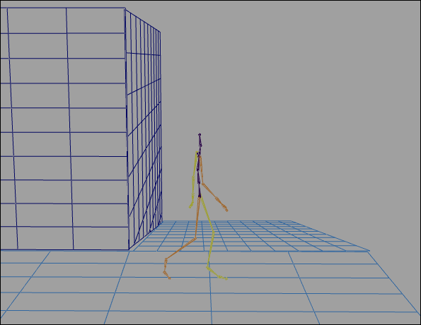
- 选择角色骨架的根关节。
在重定向角色的运动时，希望为角色的各个部分创建重定向控件，在角色的动画期间希望更改其平移和旋转。在这种情况下，会选中根关节，因为我们希望在角色的循环行走期间修改角色的整个身体的方向。
- 在“动画”(Animation)菜单集中，选择“关键帧 > 重定向”(Key > Redirect) >
 。
。 将显示“角色重定向选项”(Character Redirection Options)窗口。请参见“关键帧 > 重定向”(Key > Redirect)。
- 启用“仅旋转”(Rotation Only)，然后单击“重定向”(Redirect)。
将在角色的根关节处显示旋转重定向控件。
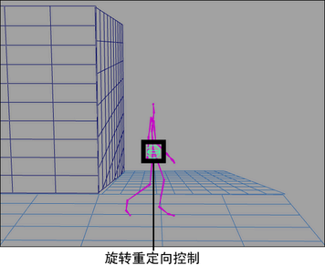 - 选择旋转重定向控件，然后通过使用“移动工具”(Move Tool)将该控件移动到角色的左脚的脚尖。 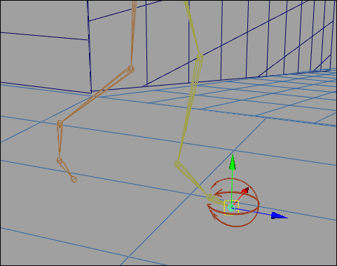
通过移动旋转重定向控件可以重新定位两足动物角色转动所围绕的点。在这种情况下，会希望角色在转弯时在其左脚的球上转动。
- 在“通道盒”(Channel Box)中，为左脚的旋转重定向控件的“旋转 X”(Rotate X)、“旋转 Y”(Rotate Y)和“旋转 Z”(Rotate Z)通道设置关键帧。
- 在动画中前进，直到右脚在地面上且抬起左脚的脚后跟为止。 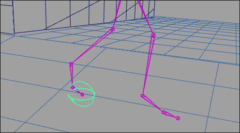
- 选择左脚旋转重定向控件，将其旋转 45 度，然后为其“旋转 X”(Rotate X)、“旋转 Y”(Rotate Y)和“旋转 Z”(Rotate Z)通道设置关键帧。 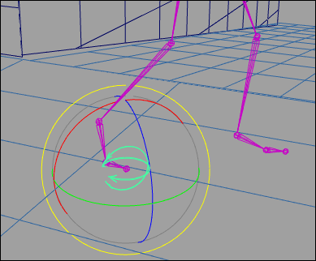
- 选择角色的根关节，然后选择“关键帧 > 重定向”(Key > Redirect)。
- 选择旋转重定向控件，然后通过使用“平移工具”(Translate Tool)将该控件移动到两足动物右脚的脚尖。 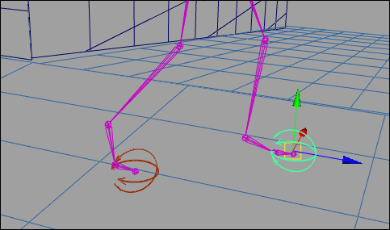
- 在“通道盒”(Channel Box)中，为右脚的旋转重定向控件的“旋转 X”(Rotate X)、“旋转 Y”(Rotate Y)和“旋转 Z”(Rotate Z)通道设置关键帧。
- 在动画中前进，直到左脚再次落在地面上且抬起右脚的脚后跟为止。 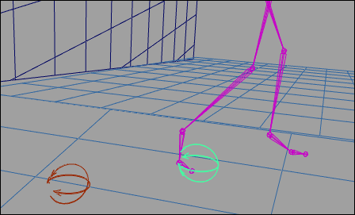
- 选择右脚旋转重定向控件，将其旋转 45 度，然后为其“旋转 X”(Rotate X)、“旋转 Y”(Rotate Y)和“旋转 Z”(Rotate Z)通道设置关键帧。 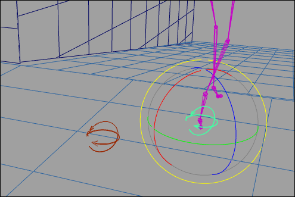
- 转到动画的播放范围的开头，然后播放动画。
角色现在会行走并围绕角点向左转弯。
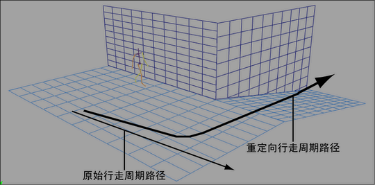
使两足动物角色在其循环行走期间沿坡道向下行走
- 在动画中前进，直到遇到角色正打算沿坡道向下走的位置处的帧。 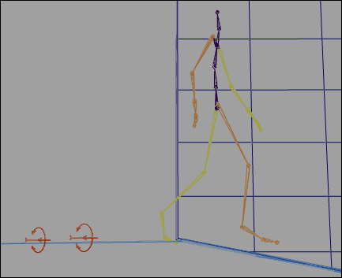
- 选择角色的根关节。
- 在“动画”(Animation)菜单集中，选择“关键帧 > 重定向”(Key > Redirect) > 。
将显示“角色重定向选项”(Character Redirection Options)窗口。请参见“关键帧 > 重定向”(Key > Redirect)。
- 启用“旋转和平移”(Rotation and Translation)，然后单击“重定向”(Redirect)。
在角色的根关节处将显示旋转和平移重定向控件。
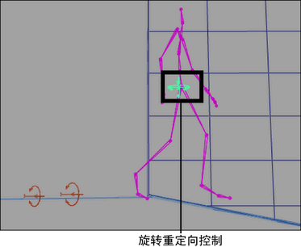 - 选择旋转和平移重定向控件，然后通过使用“平移工具”(Translate Tool)将这些控件移动到两足动物右脚的脚尖。 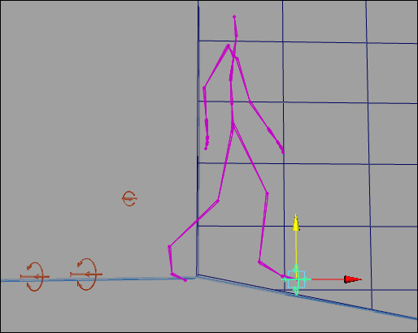
- 后退几帧，直到角色看起来双脚并排站立在坡道的边上。 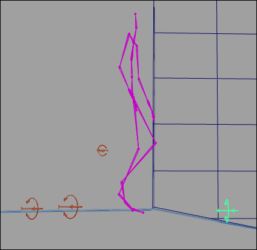
- 执行下列操作：
- 对于旋转重定向控件，为其所有的“旋转 X”(Rotate X)、“旋转 Y”(Rotate Y)和“旋转 Z”(Rotate Z)通道设置关键帧。
- 对于平移重定向控件，为其所有的“平移 X”(Translate X)、“平移 Y”(Translate Y)和“平移 Z”(Translate Z)通道设置关键帧。
- 在动画中前进到插入了重定向控件的点。
- 选择旋转重定向控件，然后通过使用“旋转工具”(Rotate Tool)旋转该控件，直到角色的双脚与坡道平行为止。 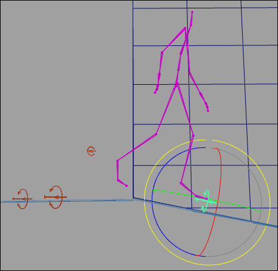
- 在“通道盒”(Channel Box)中，为旋转重定向控件的“旋转 X”(Rotate X)、“旋转 Y”(Rotate Y)和“旋转 Z”(Rotate Z)通道设置关键帧。
- 选择平移重定向控件，然后通过使用“移动工具”(Move Tool)将角色向下平移，直到右脚接触坡道，左脚接触地板为止。 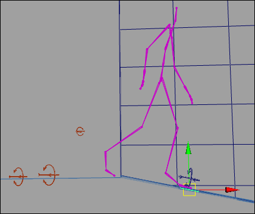
- 在“通道盒”(Channel Box)中，为平移重定向控件的“平移 X”(Translate X)、“平移 Y”和“平移 Z”(Translate Z)通道设置关键帧。
- 转到动画的播放范围的开头，然后播放动画。
在角色转过弯之后，它现在沿坡道向下行走。
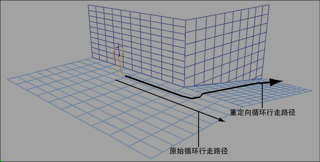